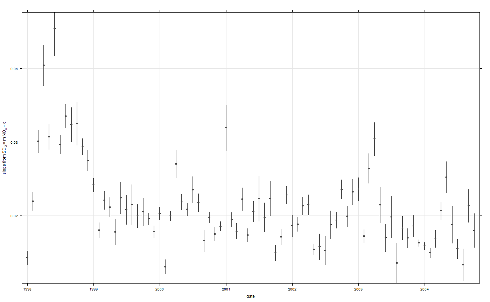

linearRelation.RdThis function considers linear relationships between two pollutants. The relationships are calculated on different times bases using a linear model. The slope and 95 in slope relationships by time unit are plotted in many ways. The function is particularly useful when considering whether relationships are consistent with emissions inventories.
linearRelation(mydata, x = "nox", y = "no2", period = "month", condition = FALSE, n = 20, rsq.thresh = 0, ylab = paste0("slope from ", y, " = m.", x, " + c"), auto.text = TRUE, cols = "grey30", date.breaks = 5, ...)
| mydata | A data frame minimally containing |
|---|---|
| x | First pollutant that when plotted would appear on the
x-axis of a relationship e.g. |
| y | Second pollutant that when plotted would appear on the
y-axis of a relationship e.g. |
| period | A range of different time periods can be
analysed. The default is |
| condition | For |
| n | The minimum number of points to be sent to the linear
model. Because there may only be a few points e.g. hours
where two pollutants are available over one week, |
| rsq.thresh | The minimum correlation coefficient (R2)
allowed. If the relationship between |
| ylab | y-axis title, specified by the user. |
| auto.text | Either |
| cols | Colour for the points and uncertainty intervals. |
| date.breaks | Number of major x-axis intervals to use. The
function will try and choose a sensible number of dates/times
as well as formatting the date/time appropriately to the range
being considered. This does not always work as desired
automatically. The user can therefore increase or decrease the
number of intervals by adjusting the value of
|
| ... | Other graphical parameters. A useful one to remove the
strip with the date range on at the top of the plot is to set
|
As well as generating the plot itself,
linearRelation also returns an object of class
``openair''. The object includes three main components:
call, the command used to generate the plot;
data, the data frame of summarised information used to
make the plot; and plot, the plot itself. If retained,
e.g. using output <- linearRelation(mydata, "nox",
"no2"), this output can be used to recover the data,
reproduce or rework the original plot or undertake further
analysis.
An openair output can be manipulated using a number of generic operations,
including print, plot and summary.
The relationships between pollutants can yield some very useful
information about source emissions and how they change. A
scatterPlot between two pollutants is the usual way to investigate
the relationship. A linear regression is useful to test the
strength of the relationship. However, considerably more
information can be gleaned by considering different time periods,
such as how the relationship between two pollutants vary over
time, by day of the week, diurnally and so on. The
linearRelation function does just that - it fits a linear
relationship between two pollutants over a wide range of time
periods determined by period.
linearRelation function is particularly useful if
background concentrations are first removed from roadside
concentrations, as the increment will relate more directly with
changes in emissions. In this respect, using linearRelation
can provide valuable information on how emissions may have changed
over time, by hour of the day etc. Using the function in this way
will require users to do some basic manipulation with their data
first.
If a data frame is supplied that contains nox, no2
and o3, the y can be chosen as y = "ox". In
function will therefore consider total oxidant slope (sum of NO2 +
O3), which can provide valuable information on likely vehicle
primary NO emissions. Note, however, that most roadside sites do
not have ozone measurements and calcFno2 is the
alternative.
# monthly relationship between NOx and SO2 - note rapid fall in # ratio at the beginning of the series linearRelation(mydata, x = "nox", y = "so2")# monthly relationship between NOx and SO2 - note rapid fall in # ratio at the beginning of the series# NOT RUN { linearRelation(mydata, x = "nox", y = "ox") # }# diurnal oxidant slope by year # clear change in magnitude # starting 2003, but the diurnal profile has also changed: the # morning and evening peak hours are more important, presumably # due to change in certain vehicle types# NOT RUN { linearRelation(mydata, x = "nox", y = "ox", period = "hour", condition = TRUE) # }# PM2.5/PM10 ratio, but only plot where monthly R2 >= 0.8# NOT RUN { linearRelation(mydata, x = "pm10", y = "pm25", rsq.thresh = 0.8) # }